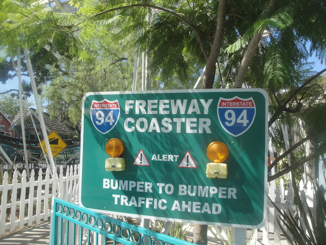

| |
Freeway Review

We're here at Adventure City. Since we're here to credit whore, you'll most likely be riding the Freeway Coaster. So hop on board you filthy credit whore. After the operator pulls down the lap bar, you go up a small lifthill. We then roll down the tiny curved first drop and get some speed. Yeah, its not much and I can run faster than this, but hey. Its a kiddy coaster. We then go over a small hill that goes right over a partridge tree branch, which you gotta admit, is pretty f*cking cool. However, we don't slow down when we get to the top of the hill, but rather as we're heading down, we slow down, and then speed back up as we get to the bottom of the hill. Yeah. This is a very strange and bizarre kiddy coaster. We then go up a small hill and go around a small turn. This then leads us down a small dip and up a tiny hill over a small hill. And then its down a dip, and through a tiny bunny hop. You get some laterals here, but at this point, the ride is over. Overall, its a decent kiddy coaster, but its still a kiddy coaster and you only rode it to boost your credit count. Now that you did, get the other credit, and if you did, then your mission is completed.
4/10
Location: Adventure City
Opened: 1994
Built by: Miler Coasters
Last Ridden: September 12, 2015
Freeway Coaster Photos




|